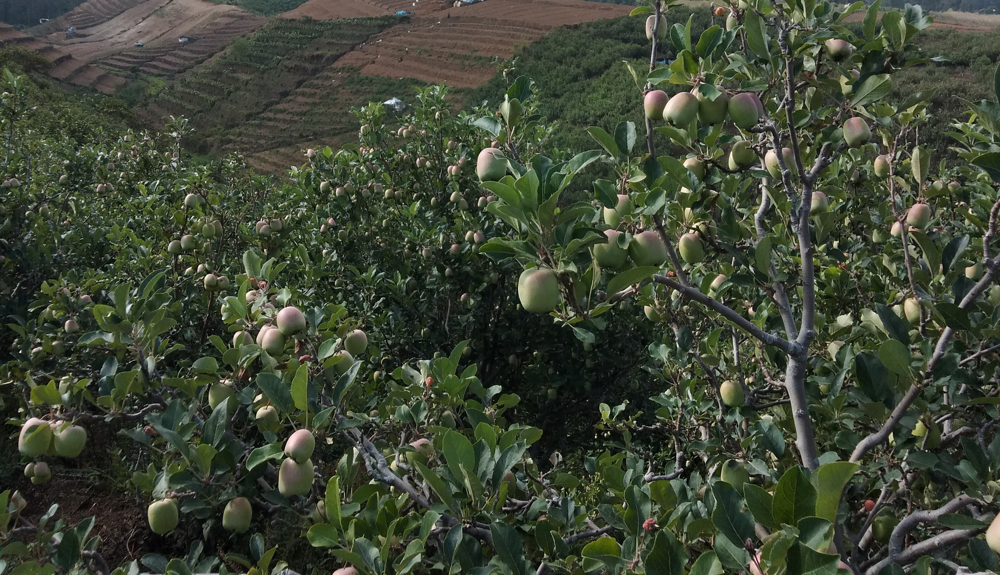

SUSTAINABLE AGRICULTURE
FOR BETTER
FUTURE
Get Started

PROFILE

BAHAN BAKU
Bahan baku yang kami gunakan berasal dari alam sehingga tidak berdampak buruk bagi lingkungan
SUMBER DAYA MANUSIA
Kami mempekerjakan karyawan dari lokasi setempat dengan gaji yang sangat layak
KONTRIBUSI
Kami menggandeng banyak pihak baik pemerintah, perusahaan lain, serta masyarakat sekitar untuk menciptakan kesejahteraan manusia dan keberlanjutan lingkungan
PRODUCT
Pupuk Organik
Rp.5.000,-
Lihat produk
Mikoriza
Rp.30.000,-
Lihat produk
PGPR
Rp.35.000,-
Lihat produk
Pupuk Organik
Pupuk organik adalah jenis pupuk yang terbuat dari bahan-bahan organik alami, seperti kompos, pupuk kandang, dan sisa-sisa tumbuhan. Fungsi utama pupuk organik adalah meningkatkan kesuburan tanah dan menyediakan nutrisi esensial bagi tanaman. Pupuk organik juga membantu meningkatkan struktur tanah, mempertahankan kelembaban, dan mendukung pertumbuhan mikroorganisme tanah. Selain itu, penggunaan pupuk organik dapat merangsang pertumbuhan tanaman secara alami dan meminimalkan dampak negatif pada lingkungan, menjadikannya pilihan yang ramah lingkungan dalam praktik pertanian berkelanjutan.
Mikoriza
Mikoriza adalah kerjasama simbiotik antara akar tanaman dan jamur mikoriza. Dalam hubungan ini, tanaman menyediakan karbon kepada jamur, sedangkan jamur membantu tanaman meningkatkan penyerapan nutrisi, terutama fosfor, dan ketersediaan air. Proses ini mendukung pertumbuhan tanaman, meningkatkan ketahanan terhadap penyakit, serta memperbaiki kesuburan tanah dan keseimbangan ekosistem tanah secara keseluruhan. Meskipun tidak semua tanaman terlibat, mikoriza memiliki peran penting dalam meningkatkan produktivitas dan kesehatan tanaman pada beberapa spesies.
PGPR
Plant Growth-Promoting Rhizobacteria (PGPR) adalah kelompok bakteri yang hidup di rizosfer tanaman, membentuk kemitraan saling menguntungkan. PGPR merangsang pertumbuhan tanaman melalui produksi hormon pertumbuhan dan memberikan manfaat seperti fiksasi nitrogen, perlindungan terhadap penyakit, peningkatan penyerapan nutrisi, dan toleransi terhadap stres lingkungan. Peran PGPR sangat penting dalam meningkatkan produktivitas pertanian dan mendukung pertanian berkelanjutan.
CONTACT US
.png)
.png)
.png)